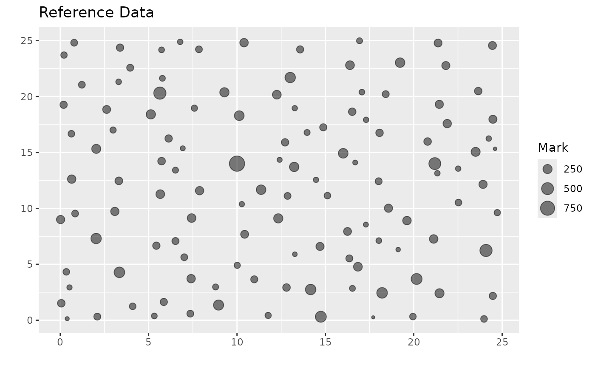

Plot a marked point process
Usage
plot_mpp(mpp_data, pattern_type = c("reference", "simulated"))Examples
# Load example data
data(small_example_data)
mpp_data <- generate_mpp(
locations = small_example_data %>% dplyr::select(x, y),
marks = small_example_data$size,
xy_bounds = c(0, 25, 0, 25)
)
# Plot the marked point process
plot_mpp(mpp_data, pattern_type = "reference")
